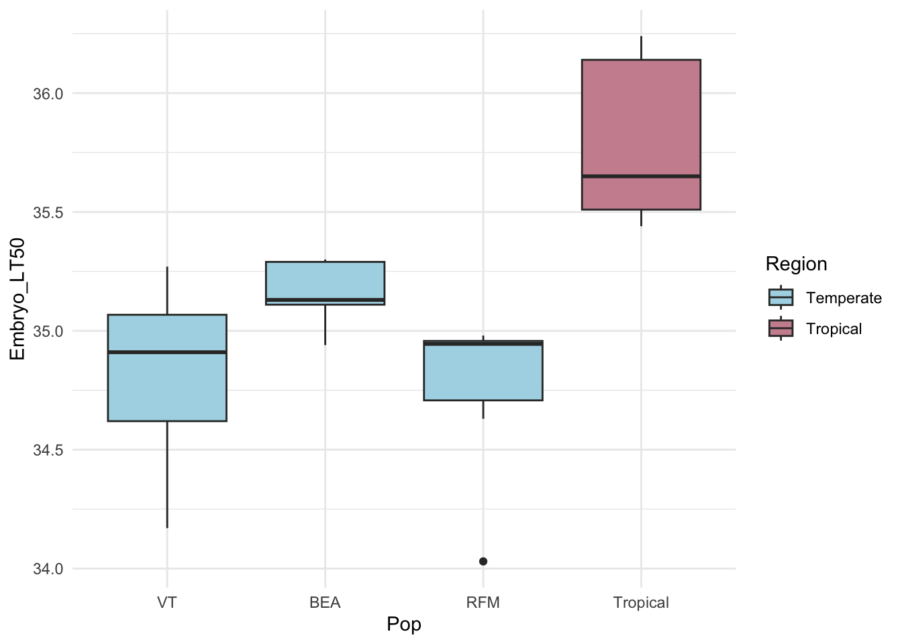
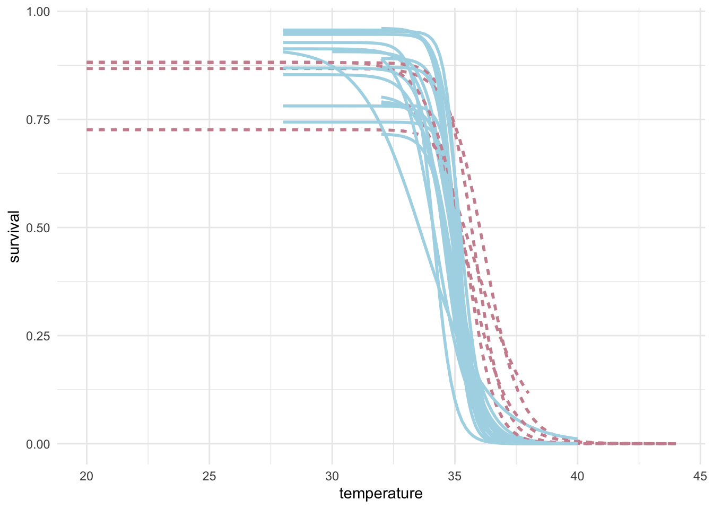

2 Day Two
# ------------------------------------------------------------------------------
# EcoEvo Workshop in R -- Day 2: data analysis & advanced data visualization
# TS O'Leary
# ------------------------------------------------------------------------------
# Load libraries ---------------------------------------------------------------
library(tidyverse)
# Load data
dat <- read_tsv("data/raw/lockwood_et_al_2018_survival.txt") |>
filter(region %in% c("temperate", "tropical"))## Rows: 933 Columns: 6
## ── Column specification ────────────────────────────────────────────────────────
## Delimiter: "\t"
## chr (2): genotype, region
## dbl (4): temperature, eggs, hatched, survival
##
## ℹ Use `spec()` to retrieve the full column specification for this data.
## ℹ Specify the column types or set `show_col_types = FALSE` to quiet this message.# Survival data
dat |>
ggplot(aes(y = survival,
x = temperature,
fill = genotype,
color = genotype)) +
geom_point(shape = 21, color = "grey80") +
geom_smooth(aes(linetype = region),
method = drc::drm,
method.args = list(fct = drc::LL.3()),
se = FALSE) +
theme_minimal() +
theme(legend.position = "none")## `geom_smooth()` using formula = 'y ~ x'
dat |>
ggplot(aes(y = survival,
x = temperature,
group = genotype,
color = region)) +
geom_smooth(aes(linetype = region),
method = drc::drm,
method.args = list(fct = drc::LL.3()),
se = FALSE) +
scale_color_manual(values = c("lightblue", "pink3")) +
theme_minimal() +
theme(legend.position = "none")## `geom_smooth()` using formula = 'y ~ x'
# Estimate the LT50s for each line
dat |>
group_by(genotype) |>
nest() |>
mutate(fit = map(data, ~ drc::drm(hatched/eggs ~ temperature,
data = .x,
weight = eggs,
fct = drc::LL.3(names = c("slope",
"upper limit",
"LT50")),
type = "binomial"))) |>
mutate(fit_tidy = map(fit, ~broom::tidy(.x))) |>
unnest(fit_tidy) |>
filter(term == "LT50") |>
arrange(desc(estimate))## Warning: There were 47 warnings in `mutate()`.
## The first warning was:
## ℹ In argument: `fit = map(...)`.
## ℹ In group 1: `genotype = "BEA_16"`.
## Caused by warning in `log()`:
## ! NaNs produced
## ℹ Run `dplyr::last_dplyr_warnings()` to see the 46 remaining warnings.## # A tibble: 24 × 9
## # Groups: genotype [24]
## genotype data fit term curve estimate std.error statistic p.value
## <chr> <list> <list> <chr> <chr> <dbl> <dbl> <dbl> <dbl>
## 1 MU <tibble> <drc> LT50 (Interce… 36.5 0.234 156. 0
## 2 CH <tibble> <drc> LT50 (Interce… 36.3 0.144 253. 0
## 3 GU <tibble> <drc> LT50 (Interce… 35.8 0.497 72.1 0
## 4 SK <tibble> <drc> LT50 (Interce… 35.6 0.131 272. 0
## 5 GH <tibble> <drc> LT50 (Interce… 35.6 0.149 239. 0
## 6 BEA_36 <tibble> <drc> LT50 (Interce… 35.4 0.175 203. 0
## 7 VTECK_9 <tibble> <drc> LT50 (Interce… 35.3 0.151 235. 0
## 8 VTECK_2 <tibble> <drc> LT50 (Interce… 35.3 0.142 249. 0
## 9 RFM_48 <tibble> <drc> LT50 (Interce… 35.2 0.196 179. 0
## 10 VTECK_14 <tibble> <drc> LT50 (Interce… 35.2 0.136 258. 0
## # ℹ 14 more rows# Import data & begin again – remake a few visualizations from last week
# Run some statistical tests on the data that goes with each visualization
# T-test – b/w adult and embryo LT50
# ANOVA – one-way within life stage by location – or two-way ANOVA with region & life stage
# Tukey HSD post hoc – maybe, but probably not worth the time or confusion
# linear regression – LT50 & latitude
# Non linear regression – raw survival data – advanced, but fun
# Facet-wrap & multi-panel figures
# End with a couple challenges – alternative data sets – built in data